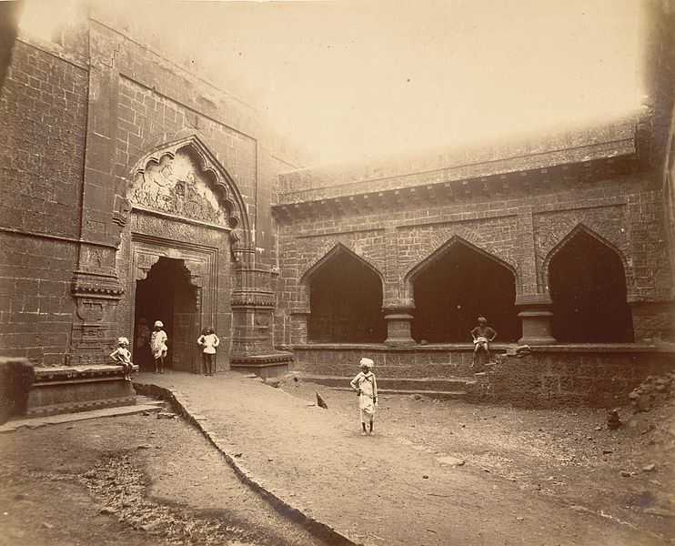
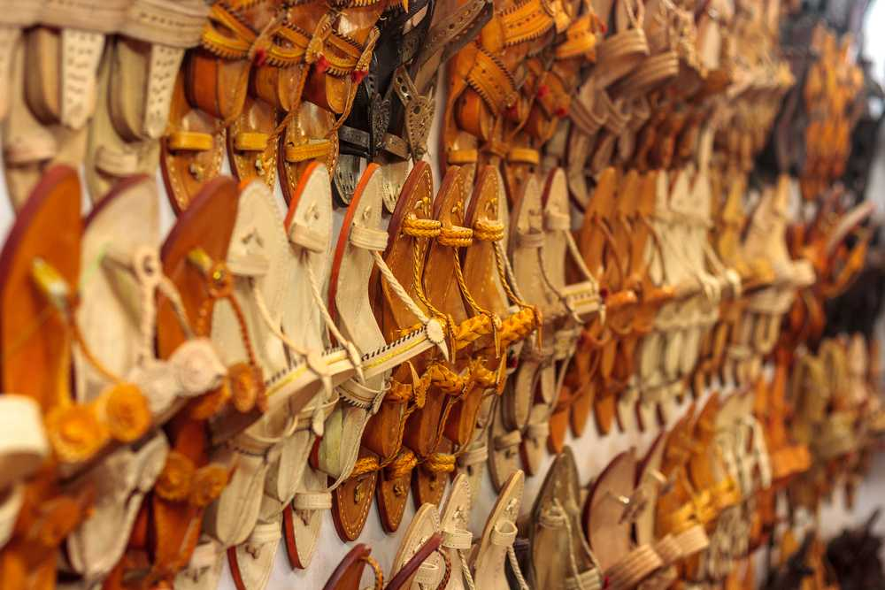
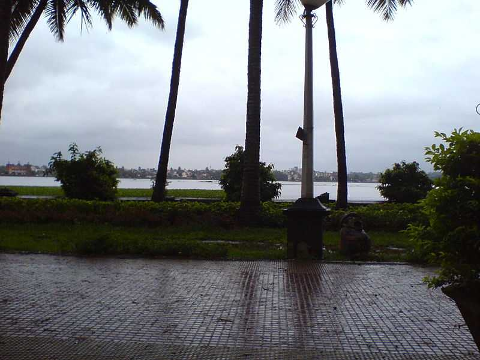

|  |  |  |
"The Spice Capital of Maharashtra" Kolhapur Tourism Kolhapur is situated on the banks of the river Panchaganga in the south-west region of Maharashtra. Situated 230 kilometres away from Pune, Kolhapur is one of the princely states and boasts of a rich legacy dating back to the times of the Marathas. Presently, Kolhapur is known for Kolhapuri sandals and necklaces that are sold worldwide. Kolhapur derives its name from a mythological story of Kolhasur - a demon who was slain by Goddess Mahalakshmi. The famous Mahalakshmi temple is situated here in the honour of Goddess Mahalakshmi. Kolhapuri chappals, Kolhapuri jewellery and Kolhapuri cuisine are famous all over India. It is a tourist-friendly destination, having no problem in commuting to accommodation and food. On the auspicious occasion of Naag Panchami, Kolhapur is at its enchanting best. Thousands of people worship live snakes by offering milk and rice. Another cultural festival that Kolhapur is known for is the Rankala Mahotsav, organized by the municipal corporation. It is a great time to witness the rich culture and traditions of this region. This five-day event is packed with live performances, musical concerts, exhibition and gastronomic delights.